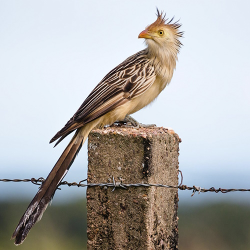


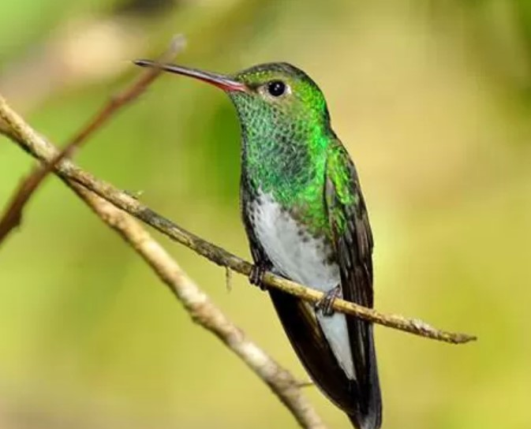
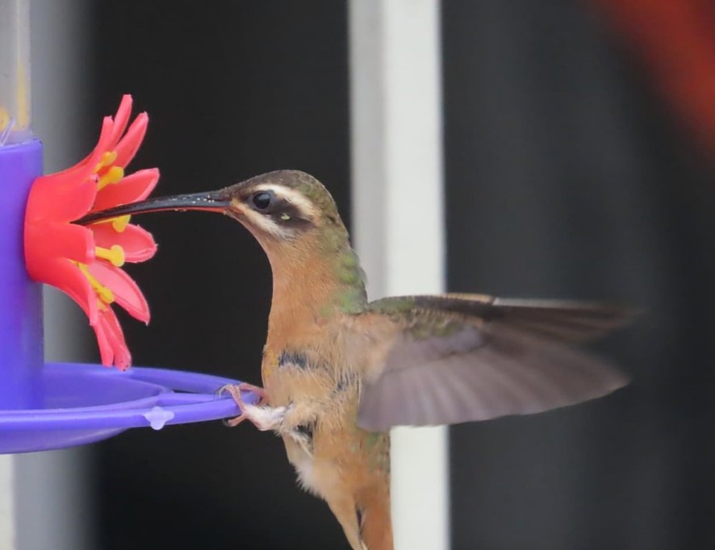
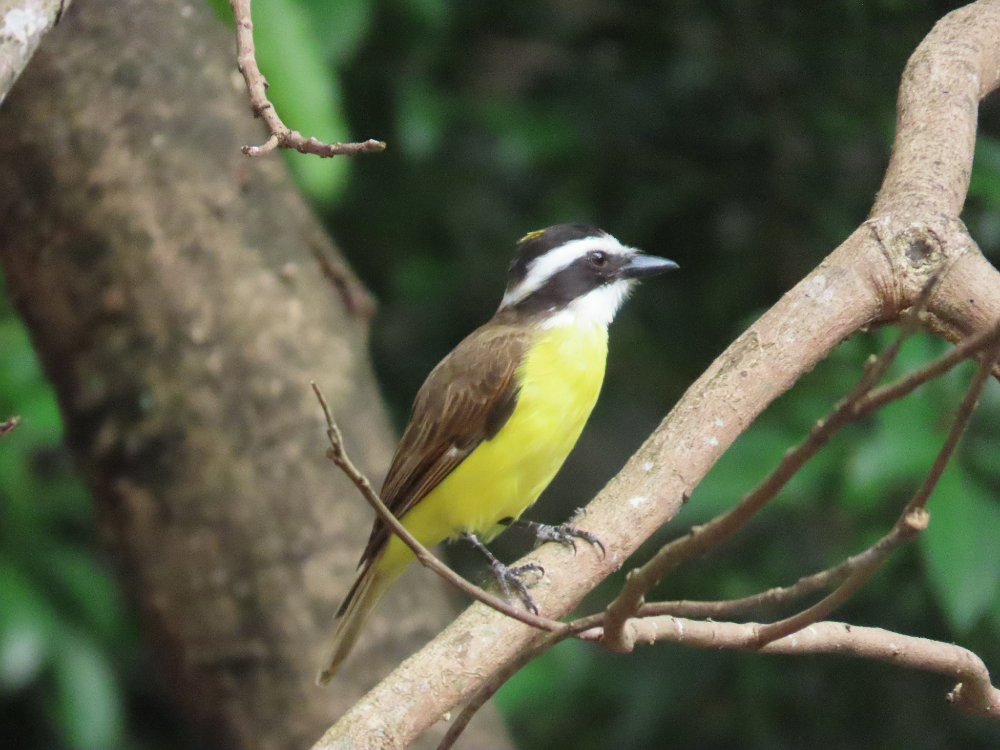
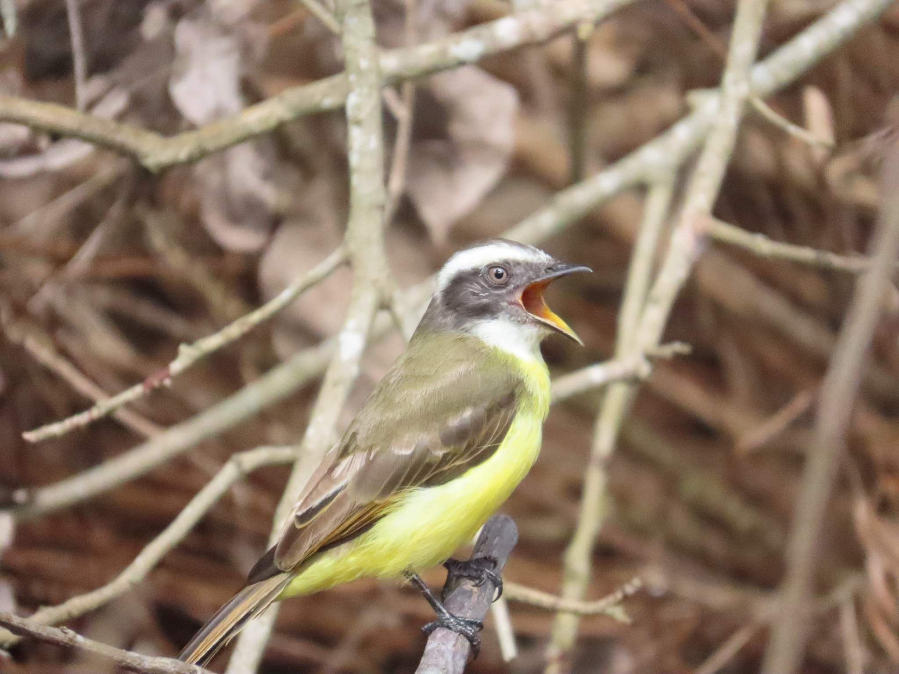

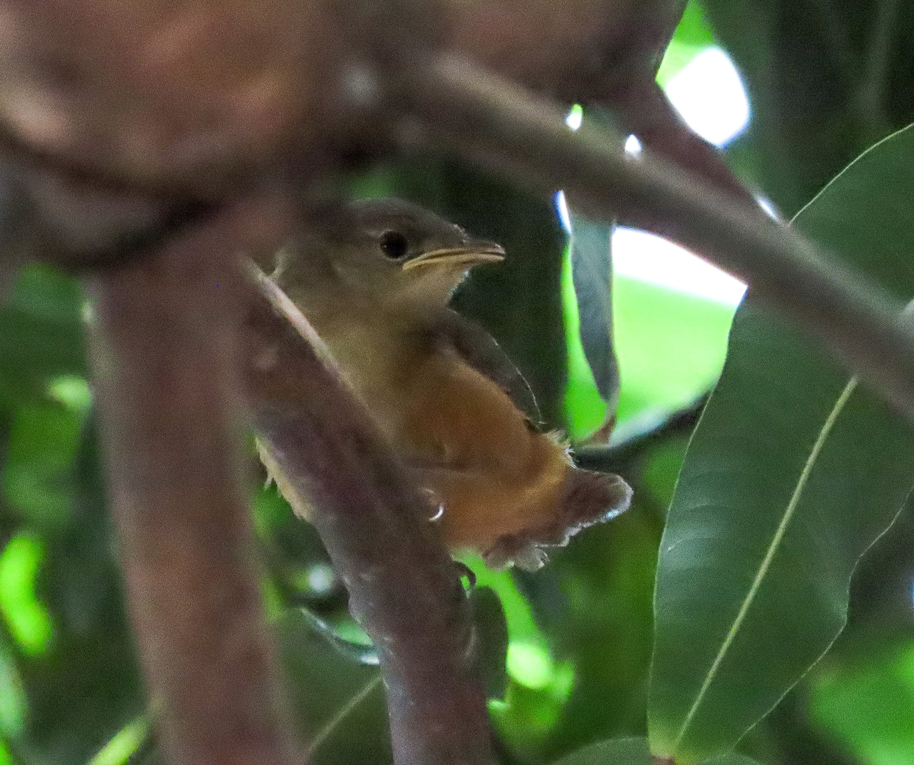

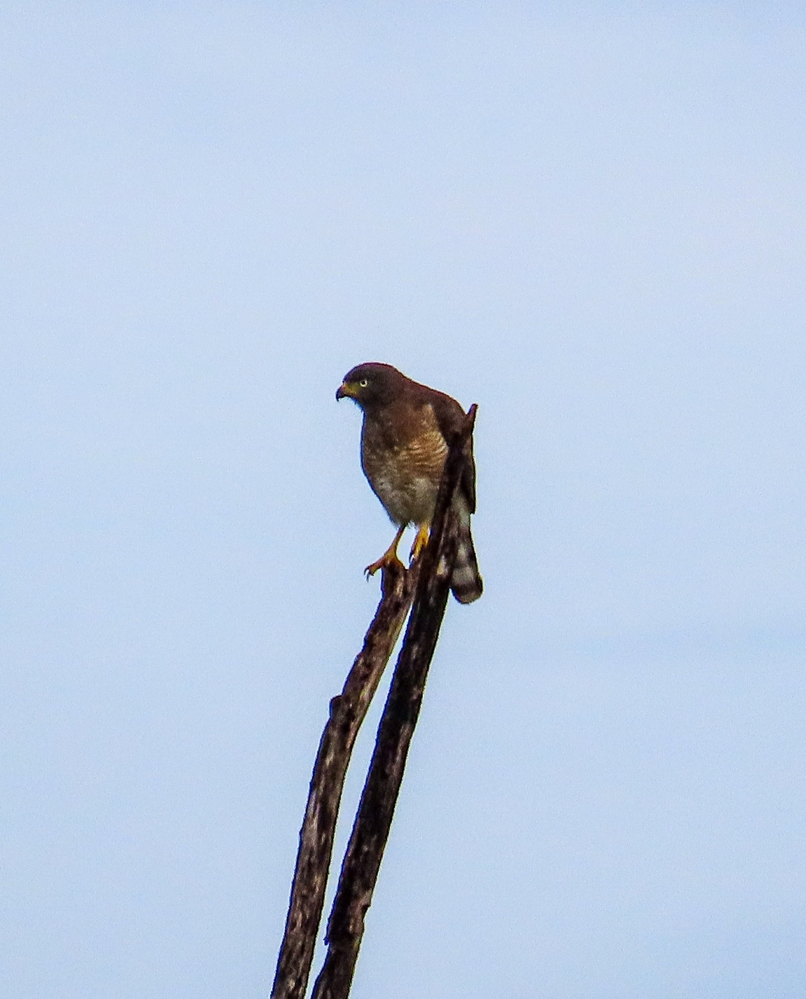

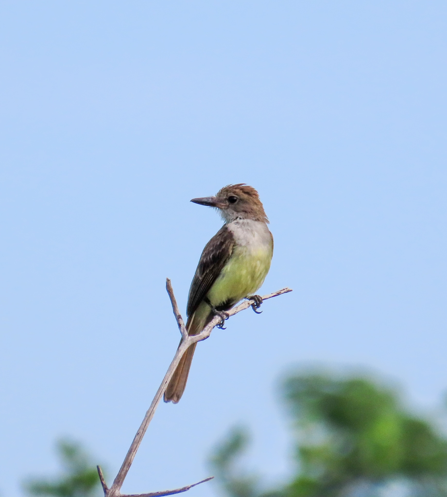

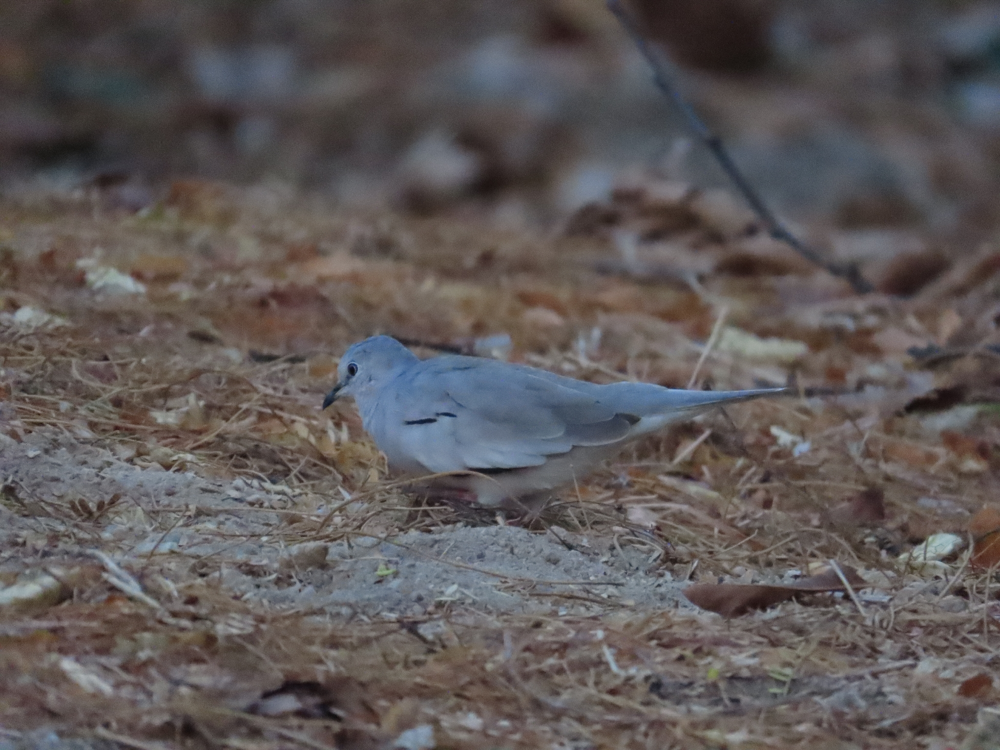

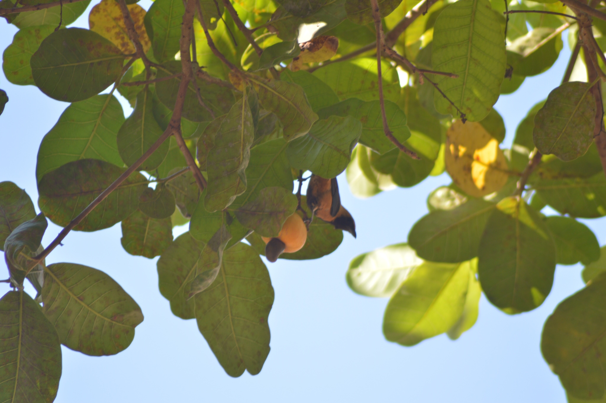

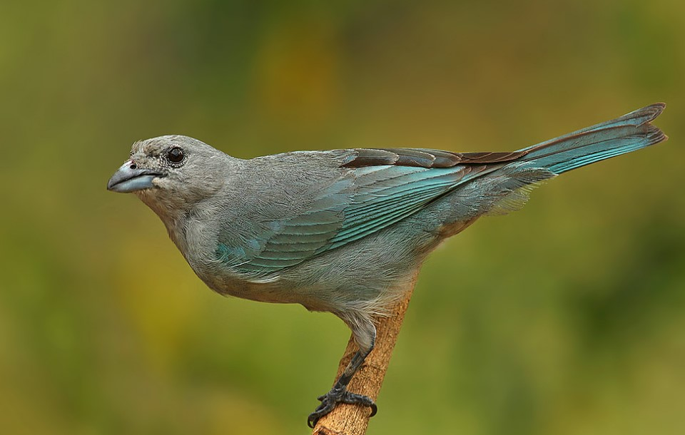


Muito comum
– Sempre presente
Comum
– observado com frequência, geralmente em horários específicos.
Incomum
– registrado ocasionalmente, exigindo algum tempo de observação.
Rara
– avistada apenas com sorte.










